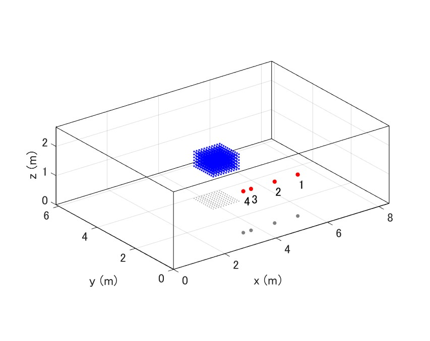
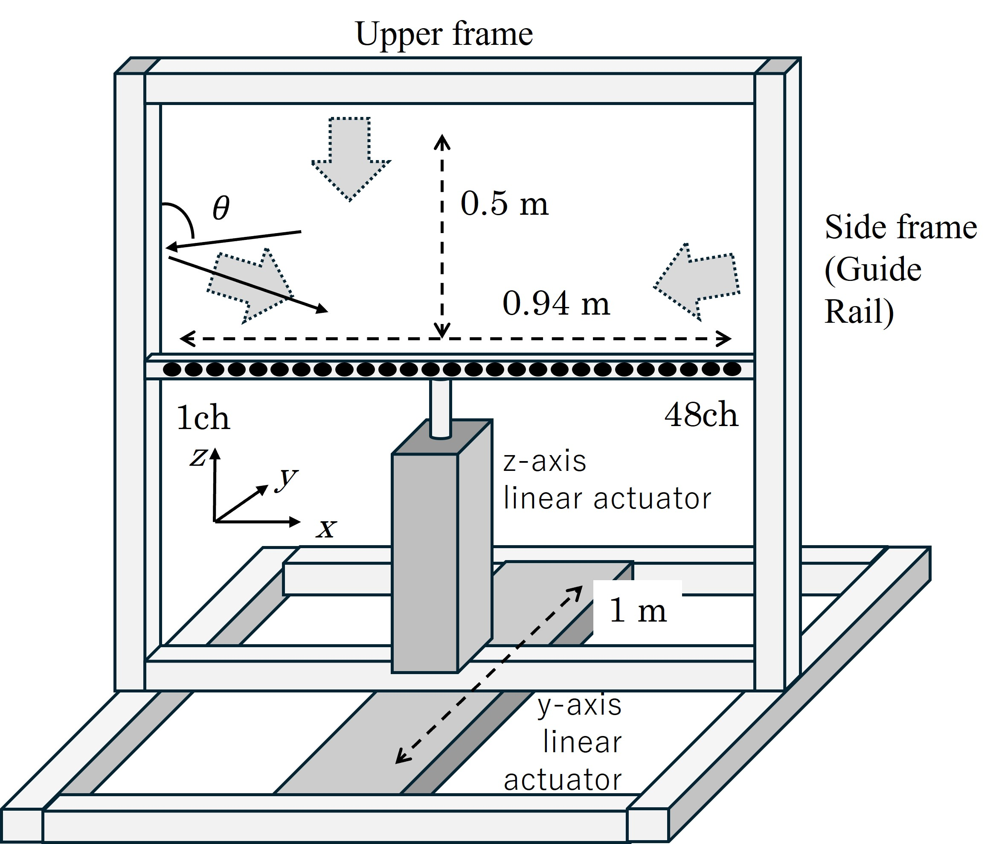

This page provides an overview of the 3D meshgrid impulse response (IR) dataset. The dataset was measured in a room using a dense 3D spatial sampling grid. It is intended for use in room acoustics analysis, wavefield synthesis, and Physics-Informed Neural Networks (PINNs).
The processed 3D meshgrid impulse response dataset (Part 1), sampled at 16 kHz, is openly available on Zenodo:
https://doi.org/10.5281/zenodo.17051811

We also provide a complementary raw dataset (Part 0), which contains room impulse responses sampled at 48 kHz before the removal of artificial reflections, with a duration of 100 ms:
https://doi.org/10.5281/zenodo.19656813

This page primarily describes the processed dataset (Part 1).
Animations showing impulse responses measured at four different speaker positions.
The impulse responses were measured at a sampling frequency of 48 kHz on a three-dimensional grid with a spatial interval of 2 cm. The grid consists of 48 positions along the x-axis, 51 positions along the y-axis, and 26 positions along the z-axis, resulting in a set of IRs for each loudspeaker. After the measurements, reflections caused by the frames of the microphone array measurement system were suppressed, and the dataset was subsequently resampled at 16 kHz.
Room dimension : 8.4 × 6.14 × 2.66 m Reverberation time : 0.65 s Loudspeakers : Cambridge Audio MINX MIN12 (8 cm cubic) Speaker positions : ([5.54, 4.64, 3.72, 3.42], 0.94, 1.42) m Microphone array origin (left end of the array, absolute coordinates) : (3.74, 2.94, 1.11) m Grid interval : 0.02 m Grid size : 48 × 51 × 26 = 63,648 Measured sampling frequency : 48,000 Hz Excitation signal : 2-second up Time-Stretched Pulse (TSP) Stored sampling frequency : 16,000 Hz Stored impulse response length : 0.25 s (4,000 samples) 

The dataset is stored in an .h5 file, created using MATLAB. The structure is as follows:
% RIR dataset
h5create(filename_out, '/rir', size(IR_flat), 'Datatype', 'single');
h5write(filename_out, '/rir', IR_flat);
h5create(filename_out, '/grid', size(grid_coords), 'Datatype', 'single');
h5write(filename_out, '/grid', grid_coords);
% Attributes
h5writeatt(filename_out, '/', 'fs', single(fs));
h5writeatt(filename_out, '/', 'c', single(c));
% Speaker / microphone / room metadata
h5writeatt(filename_out, '/', 'sp_pos', sp_pos);
h5writeatt(filename_out, '/', 'mic_array_pos', mic_arr_pos);
h5writeatt(filename_out, '/', 'room_size', room_size);
h5writeatt(filename_out, '/', 'grid_dimensions', grid_num);
/rir : Impulse response data (time samples × flattened 3D grid )/grid : Grid coordinates (x, y, z)fs : Sampling frequency [Hz]c : Speed of sound [m/s]sp_pos : Speaker positions [m]mic_array_pos : Microphone array positions (left end of the array) [m]room_size : Room dimensions [m]grid_dimensions : Number of points along each axisThe processed dataset (Part 1) and the suppression of reflections from the microphone array measurement frame are described in the following paper:
Y. Haneda and Y. Ren, "3D Mesh Grid Room Impulse Responses Measured with A Linear Microphone Array And Suppression of Frame Reflections," ICASSP 2026 - 2026 IEEE International Conference on Acoustics, Speech and Signal Processing (ICASSP), Barcelona, Spain, 2026, pp. 15507-15511.
DOI: 10.1109/ICASSP55912.2026.11461569
If you use this dataset in your research, please also cite the above paper.
Please note that the HDF5 dataset was generated using MATLAB,
which uses column-major array ordering.
When the dataset is loaded in Python/NumPy,
which uses row-major array ordering,
the dimensions of the /rir dataset may appear transposed.
Users should therefore carefully check the array shape after loading the HDF5 file and transpose the array if necessary before reshaping.
A Jupyter Notebook example demonstrating how to correctly load, reshape, and visualize the MATLAB-generated HDF5 dataset in Python is available here:
Example_Visualization_3dRIR_python.ipynb
Part 1 (processed dataset):
Yoichi Haneda, Yi Ren (2025). 3D meshgrid room impulse response dataset (Part 1). Zenodo.
https://doi.org/10.5281/zenodo.17051811
@dataset{haneda_meshgrid_ir_part1_2025,
author = {Haneda, Yoichi, Ren, Yi},
title = {3D meshgrid room impulse response dataset (Part 1)},
year = {2025},
publisher = {Zenodo},
doi = {10.5281/zenodo.17051811},
url = {https://doi.org/10.5281/zenodo.17051811}
}
Part 0 (raw dataset):
Yoichi Haneda, Yi Ren (2026). 3D meshgrid room impulse response dataset (Part 0). Zenodo.
https://doi.org/10.5281/zenodo.19656813
@dataset{haneda_meshgrid_ir_part0_2026,
author = {Haneda, Yoichi, Ren, Yi},
title = {3D Meshgrid Room Impulse Response Dataset – Part 0 (Raw Measurements)},
year = {2026},
publisher = {Zenodo},
doi = {10.5281/zenodo.19656813},
url = {https://doi.org/10.5281/zenodo.19656813}
}
Return to the home page.